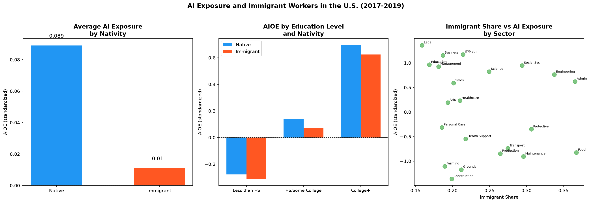

Are immigrant workers in the United States more or less exposed to AI-driven occupational displacement than native workers — and does this vary by education level or sector?
This project does not claim to measure displacement directly. Instead, it asks a prior question: which group of workers is more likely to be in occupations where AI is most relevant? The answer shapes where displacement risk would concentrate if AI exposure translates into job loss.
The task-based framework of Autor, Levy & Murnane (2003) argues that technology substitutes for routine, codifiable tasks while complementing nonroutine cognitive work. Peri & Sparber (2009) showed that immigrant and native workers sort into different task niches — immigrants concentrating in manual tasks, natives in communication-intensive roles. This project asks whether that sorting pattern means immigrants face systematically lower AI exposure than natives.
I replicated the AI Occupational Exposure (AIOE) index of Felten, Raj & Seamans (2021) using O*NET ability data. The index measures how much each occupation's task requirements overlap with current AI capabilities, across 774 occupations at the 6-digit SOC level. The replication achieved a correlation of 0.9949 with Felten et al.'s published values.
I then merged this index with IPUMS CPS microdata (2017–2019) covering 2.58 million employed workers, categorized by nativity status (native-born vs. foreign-born).

This project establishes the exposure baseline. The natural follow-up is a causal design: did workers in high-AIOE occupations experience differential wage or employment changes after 2020, and does this effect differ between immigrant and native workers? That question requires panel data and a difference-in-differences design — the next project in this series.
Autor, D., Levy, F., & Murnane, R. (2003). The skill content of recent technological change. Quarterly Journal of Economics.
Felten, E., Raj, M., & Seamans, R. (2021). Occupational, industry, and geographic exposure to artificial intelligence. Strategic Management Journal.
Peri, G., & Sparber, C. (2009). Task specialization, immigration, and wages. American Economic Journal: Applied Economics.